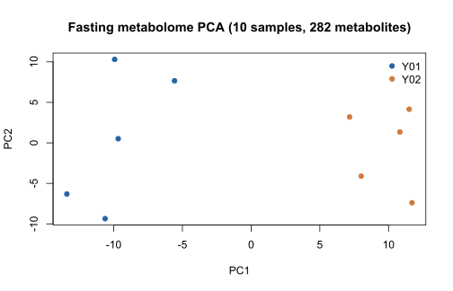
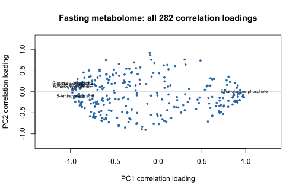
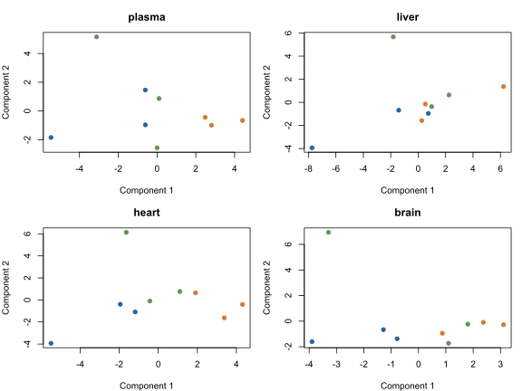

Overview
loadings MCP brings the loadings R package to AI agents through the Model Context Protocol. Run multivariate analyses, examine sample scores and metabolite loadings, and obtain the package's loading hypothesis tests as structured JSON.
Use a single metabolome matrix or integrate matched datasets with multiset PLS. Analyses run in R through the official mcptools server; the original loadings package is unchanged.
Available methods
Single-dataset analysis
- Principal component analysis (PCA)
- Orthogonal smoothed PCA (OS-PCA)
- PLS with rank order of groups (PLS-ROG)
- PLS discriminant analysis (PLS-DA)
- Regularized CCA discriminant analysis (RCCA-DA)
Multiset analysis
- Multiset PLS
- Multiset PLS with rank order of groups
- Unsupervised multiset PLS
- Per-block scores, coefficients and loadings
- Official loading hypothesis tests
Loading p-values are exploratory and unadjusted. PCA includes eigenvalues and variance ratios. Other methods report these quantities as unavailable. Prediction and classifier validation are outside this interface.
Metabolome examples
Fasting mouse liver: PCA
The complete loadings::fasting dataset contains 10 samples and 282 metabolites measured by CE-TOFMS, from normal and 12-hour fasted mice. These figures are generated by the actual PCA tool, with centering and unit-variance scaling. Group codes follow the packaged Y matrix.


Call demo_data(dataset="fasting").
Use its x with analyze_pca(components=2, max_rows=400).
Explain the scores, metabolite loadings and unadjusted p-values.Matched rabbit tissues: multiset PLS
loadings::whhl contains 9 matched samples across plasma (129 metabolites), liver (170), heart (161) and brain (159). This example uses all four original blocks and the packaged connection weights, without slicing or synthesizing data.

Call demo_data(dataset="whhl").
Pass blocks, y and tau to analyze_multiset(method="multipls").
For multipls_rog, also pass d. For unsv_multipls, use unsupervised_tau.Getting started
The hosted MCP server is awaiting deployment approval. No public endpoint is available yet. You can run the server locally using the repository instructions.
Claude Code
claude mcp add --transport http loadings-mcp http://localhost:8080/mcpStart the local server first. After deployment, use the verified HTTPS /mcp endpoint. Official Claude Code guide.
Claude Desktop and ChatGPT
For Claude Desktop, add a custom remote connector through the connector interface. For ChatGPT, use Plugins → Add custom MCP server where permitted by your account and workspace. Follow the official connection guide and configure authentication for your deployment.
Transport: Streamable HTTP at /mcp. The server does not provide OAuth. Private Cloud Run IAM access requires a compatible client identity token. Cloud Run, ChatGPT and Claude connection tests are not claimed until performed.
Available tools
| Tool | Inputs | Output |
|---|---|---|
demo_data | dataset: fasting (default) or whhl | Real metabolome rows, variable names, groups; whhl adds matched blocks, tau and d |
analyze_pca | x, components, max_rows | Scores, loadings, p-values, eigenvalues and variance ratios |
analyze_model | method, x, y, d, kappa, lambda, components, max_rows | Single-dataset scores, coefficients, loadings and p-values |
analyze_multiset | method, blocks, tau, y, d, kappa, components, max_rows | Per-block scores, coefficients, loadings, auxiliary scores and p-values |
Matrix inputs use {"rows": [[...], [...]]}. Results include conditions, warnings, errors and truncation metadata. Limits: 500 samples, 400 variables and 50,000 cells per matrix; multiset analyses allow 2–4 blocks, 800 variables and 100,000 cells in total. Sample rows must be aligned across blocks.
Documentation
References
- Yamamoto et al. (2014). Loading tests and the fasting metabolome dataset. BMC Bioinformatics.
- Yamamoto et al. (2021). Orthogonal smoothed PCA. Metabolites.
- Yamamoto (2017). PLS with rank order of groups. Journal of Chemometrics.
- Yamamoto (2022). Multiset PLS with rank order of groups for integrating multi-omics data. bioRxiv.
- Ooga et al. (2011). Metabolomic Anatomy of Animal Model Revealing Homeostatic Imbalances in Dyslipidemia. Molecular BioSystems 7:1217–1223. Source of whhl data.
About
Developer: Hiroyuki Yamamoto
Open-source research software built with R and mcptools. Wrapper and website: MIT license. The loadings package retains its LGPL-3 license. Independent of OpenAI, Anthropic, Posit and DBCLS.